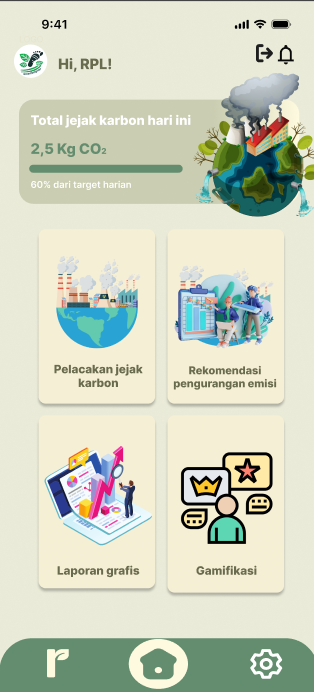

Proyek Terbaru

Aplikasi Greenfootprint
Pengembangan website greenfootprint dengan fitur pelacakan, rekomendasi emisi, dan laporan grafis dapat membantu seseorang mengetahui serta mengurangi jejak karbon pribadi mereka.
Lihat DetailAplikasi Mobile Edukasi
Aplikasi pembelajaran interaktif dengan gamifikasi untuk meningkatkan pengalaman belajar pengguna.
Lihat Detail
Dashboard Admin
Sistem dashboard admin dengan visualisasi data dan panel kontrol untuk mengelola konten website.
Lihat Detail